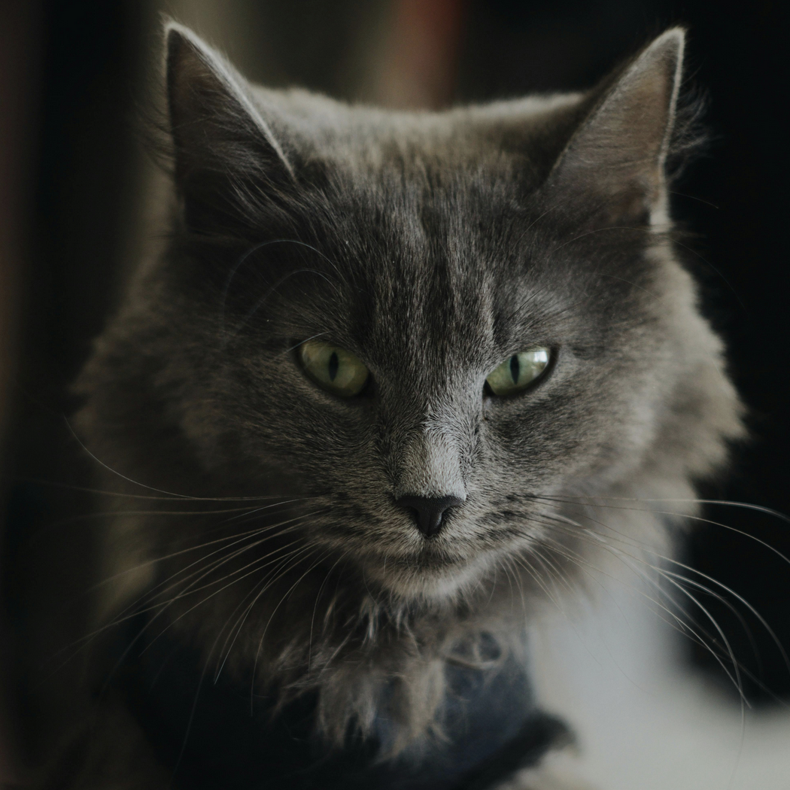

Details
Hello! This is my website. A few of the projects I've taken on include:
- A sentence generator based on input.
- A way to build an adjacency matrix between steam games and tags.
- A program that emails scraped data at a certain time daily.
- A to do list with Java as the backend and React as the frontend.
At the bottom, you can go to “PROJECTS” to see live demos for a few of my projects. You can also find other projects I've worked on under “GITHUB.”
Credits
Credits for art and images used in this site.
“The cat heaved a sigh, raised his head, and stared fixedly at my face, seeming so choked with emotion, his heart so full of feeling, that he could not say a thing in reply.”- Emperor Uda